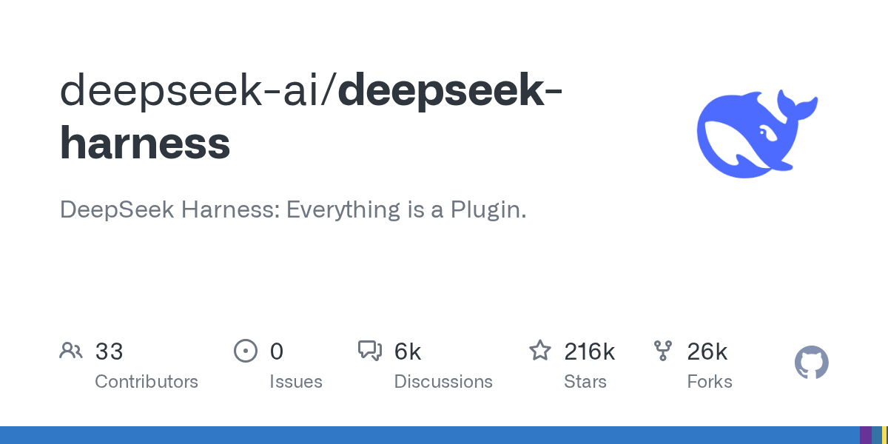

02 GitHub
deepseek-ai/deepseek-harness
플러그인으로 조립하는 에이전트 틀
★ 216,262이번 주 +2,361TypeScriptMIT 사내 사용 가능최근 활동 09.08테스트 없음예제 없음AGENTS.md 있음

에이전트 도구를 사내에 붙일 때는 모델 성능 못지않게 확장 방식이 중요하다. 이 저장소는 처음부터 플러그인 중심 구조를 내세운다. 필요한 기능을 모듈처럼 더하는 방향이 분명하다. 대신 아직 빠르게 바뀌는 단계라 안정성보다 실험성이 앞선다.
무엇을 하는 물건인가
DeepSeek Harness는 에이전트를 실행하고 확장하는 틀이다. 기능을 전부 플러그인으로 다루는 구조라 필요한 것만 붙여 쓸 수 있다. 기본 실행 화면은 웹 인터페이스로 뜬다. 업무용 포털에 메뉴를 꽂듯이 기능을 조립하는 성격이 강하다.
스펙과 도입 조건
- 언어는 TypeScript다.
- 실행에는 Node.js가 필요하다.
- 설치 형태는 npm 실행 또는 소스 직접 실행 방식이 있다.
- 기본 실행 형태는 로컬 Web UI 서버다.
- 라이선스는 MIT다.
- 릴리스는 아직 없고 개발자 프리뷰 단계다.
- 호환성을 깨는 변경이 나올 수 있다고 밝힌다.
이럴 때 쓰면 좋다
- 고객 문의 분류나 요약 기능을 사내 도구에 플러그인처럼 붙여 보려는 실험에 맞다.
- 규정 문서 검색, 사내 위키 조회, 코딩 보조를 기능별로 나눠 시험하려는 팀에 어울린다.
- 야간 운영 점검용 에이전트 화면을 로컬에서 먼저 띄워 안전 공지를 확인하며 검증할 때 적합하다.
핵심 기능
- 모든 기능을 플러그인으로 다루는 구조를 제공한다.
- npm으로 바로 실행할 수 있는 로컬 Web UI를 제공한다.
- 플러그인 저장소에 dsh-plugin 주제를 붙여 발견성을 높이는 방식을 안내한다.
왜 지금 주목받나
에이전트 도구가 커질수록 기능을 한 덩어리로 묶는 방식은 사내 실험에 부담이 된다. 이 저장소는 기능을 플러그인 단위로 나누는 점을 전면에 내세운다. 구조가 단순해 보이지만 아직 개발자 프리뷰다. 호환성을 깨는 변경이 계속 나올 수 있어, 지금 관심을 받는 이유는 완성도보다 설계 방향과 확장성에 가깝다.
사내 도입 체크
- 외부 API 호출 여부는 발췌 정보만으로 확인되지 않는다. 기본 플러그인과 모델 연결 방식을 따로 확인해야 한다.
- 로컬 Web UI를 열어 실행하므로 내부 PC 보안 정책과 포트 사용 정책 점검이 필요하다.
- 유지보수 주체는 DeepSeek AI 조직 계정이다.
- 당장 대체 가능한 상용 제품 유무는 확인 필요다. 현재 정보만 보면 범용 에이전트 확장 틀에 가깝다.
주요 용어
플러그인 아키텍처(plugin architecture): 기능을 독립 모듈로 붙이고 빼는 설계 방식 Web UI: 브라우저에서 쓰는 화면형 인터페이스 개발자 프리뷰(developer preview): 정식판 전 단계라 기능과 호환성이 자주 바뀌는 상태 호환성 파괴 변경(compatibility-breaking change): 기존 설정이나 확장이 그대로는 작동하지 않게 바뀌는 변경
원문 정보
제목: deepseek-ai/deepseek-harness
최근 활동: 2026.09.08